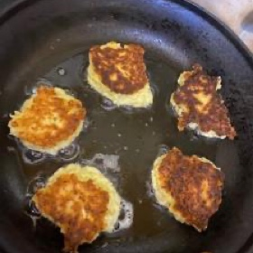

← All recipes
Leek Fritters

Ingredients
- 2 small leeks, cut in half, layers separated, washed and cleaned
- 1 1/2 cups flour
- 1 teaspoon salt
- 1 teaspoon baking powder
- 2 eggs
- mild oil for frying
Directions
- Take the leeks which have been well cleaned to remove the grit. Take a food processor or blender and place the leeks into the bowl.
- Chop leeks finely in food processor but not liquidy, leave some texture. Add the flour, salt, baking powder and eggs and pulse together, scraping down sides and incorporating into a thick batter. Take a frying pan and pour a shallow amount of oil to cover bottom of pan. Heat oil till it bubbles and lower to medium high heat. Take heaping tablespoons of the batter and fry in hot oil about 2-3 minutes on each side or till golden brown on both sides. Drain on wire racks for best crispiness or paper towels if you will eat them hot off the “griddle”.
Original source: kosherfromjerusalem.com